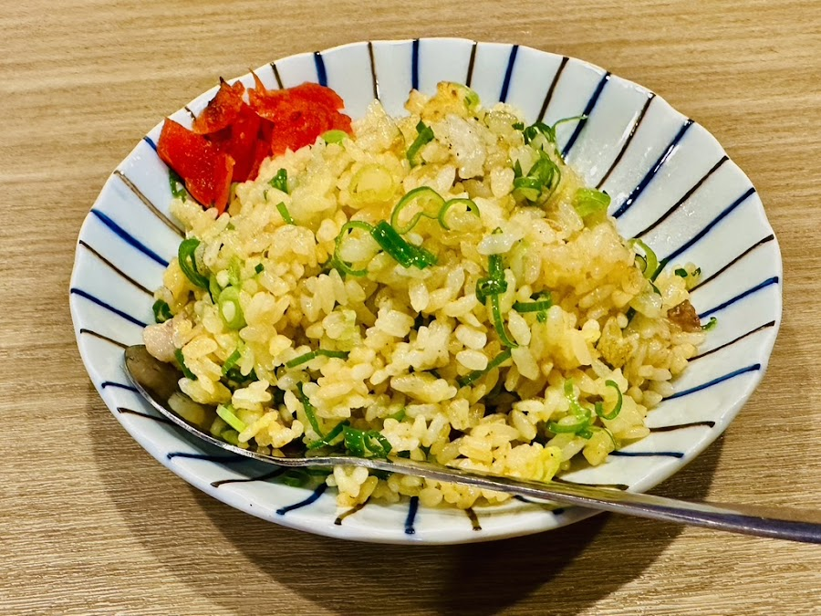
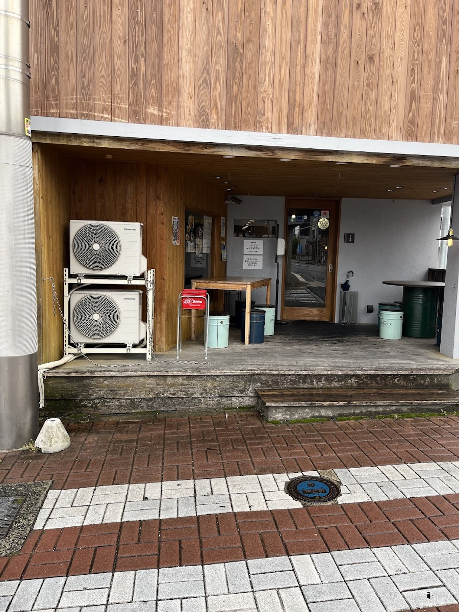
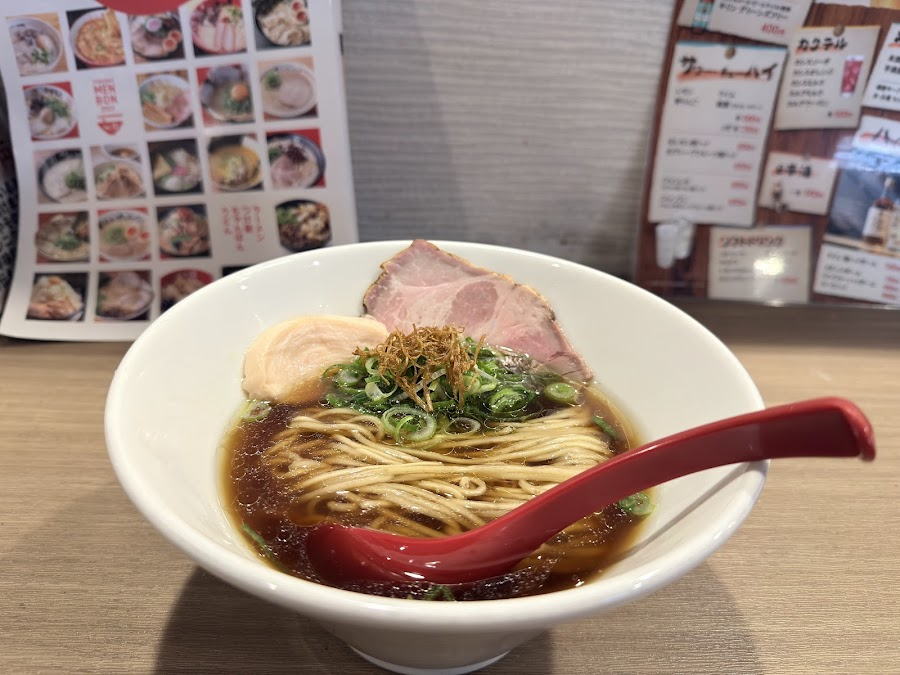

化学調味料不使用・自家製ポルチーニオイル・全粒粉入り自家製麺
糸島産カノオ醤油4種ブレンドの、本物のらーめん
About
JR筑前前原駅から徒歩4分。夜のみ営業するこだわりのらーめん専門店です。
麺は糸島産全粒粉入りの自家製麺。もちもちとした食感は、白い小麦粉だけでは出せない奥行きがあります。スープは豚骨・鶏ガラをベースに、化学調味料を一切使用せず丁寧に仕上げます。
看板の醤油らーめんは、糸島の老舗カノオ醤油4種をブレンドし、自家製ポルチーニオイルを加えた唯一無二の一杯。チャーシューは鶏チャーシューと大判豚チャーシューの2種で、飽きのこない食べ応えです。

※ 写真提供：Google マップ
Menu
化学調味料不使用。自家製ポルチーニオイルが香る、糸島の醤油4種をブレンドした看板メニュー。全粒粉入り自家製麺との相性は抜群。
チャーシュー2種（鶏・豚）、糸島産メンマ入り
豚骨・鶏ガラベースのあっさり白醤油スープ。甘みと深みのある黄金色のスープが自家製麺によく絡みます。
小辛から選べる辛さ設定。ゴマのクリーミーなスープに肉と薬味がマッチ。もちもちの麺が担々麺にもよく合います。
0辛あり・辛いのが苦手な方も安心
食欲をそそる濃厚な和えダレと太麺のまぜそば。ご飯との〆にも人気のメニューです。
らーめんのサイドに合わせたい一品。炙りチャーシューとネギの香ばしさが食欲を増進。
トッピングをすべて乗せた特製仕様。初めての方や記念日利用に。
※ メニューは季節・仕入れにより変更する場合があります。詳細はお電話にてご確認ください。
Gallery


※ 写真提供：Google マップ
Voice
「ラーメンのスープがあっさりして、非常に美味しい！麺もツルツル。地元の常連客が多かったんで、雰囲気が良かったです。またリピートしたいお店です。」
「化学調味料一切不使用・自家製ポルチーニオイル使用・糸島のカノオ醤油をメインに4種類の醤油をブレンド。麺はもちもちな食感。スープはあっさりとした醤油ベースで甘い。」
「白い担々麺と味玉ラーメンのチャーハンセットを注文。担々麺はゴマのクリーミーな感じもあり、肉や薬味もマッチしてとっても美味しい。麺もモチモチで飽きがこない。」
Hours
| 月曜日 | 18:00〜23:00 |
|---|---|
| 火曜日 | 18:00〜23:00 |
| 水曜日 | 18:00〜23:00 |
| 木曜日 | 定休日 |
| 金曜日 | 18:00〜深夜0:00 |
| 土曜日 | 18:00〜深夜0:00 |
| 日曜日 | 18:00〜23:00 |
※ 夜のみ営業。駐車場なし。Wi-Fi完備。
個室（8名〜）・貸切（20〜50名）対応可。予約はネットまたはお電話にて。
Access